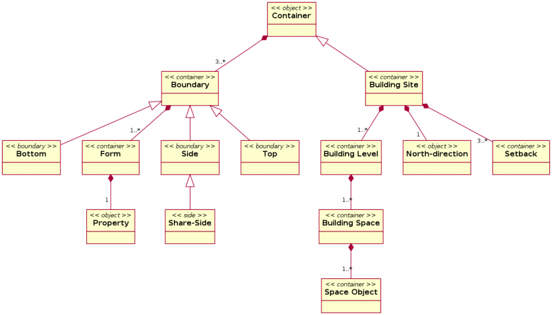

This page is an attempt to collect ideas about parametric design in the field of architecture for building the Arch Module. Since it is a bit different than the mech engineering field, I want to define concepts a bit better before thinking about how to start implementing it... Feel free to add your ideas!
Similar software
File formats
- STEP - already fully working in FreeCAD
- IFC
General concepts
- FreeCAD is perfect for the task. Designing with parametric objects will greatly reduce the only real problem I see in FreeCAD, which is dealing with thousands of objects. Everything needed is there already, like custom object types, custom properties, etc. The main difficulty, designing a general model for dealing with interaction between objects, is now potentially over, since FreeCAD introduced a dependency graph especially for that purpose.
- BIM (building information modeling) is a concept invented by a couple of building parametric design software vendors, principally autodesk. It means that you don't project a building by drawing anymore, but by inserting information (parameters). The software would then produce a drawing automatically. This is
totally bullshit highly questionable in my opinion and only a propaganda concept. Even in most advanced BIM software around (Revit, Archicad and Microstation GC), you can't abstract the act of drawing unless you want to kill any creativity. The goal here is not to be the most automatic, but to keep flexible.
- Mech engineering parametric design is usually based on changes history and constraint solving. Those two concept have much less importance in building design, since you rarely want to crawl back in the steps you did (they are usually very simple), and keeping constraints like horizontality, angle, or distance, even if they are useful, is not as important as in mech design.
- Arch parametric design is based on archetypes: wall, door/window, roof, slab, beam, are the basic ones. Outside them, what you'll mostly have are derivatives of those
- It makes heavy use of assembly: for example several windows are grouped together to form a curtain wall
- Relationship is the key. Elements are rarely very complex or require much modeling work, but they must often be transformed by the juxtaposition or inclusion of other elements. For example a wall is nothing else than a simple extrusion, but it must connect to other walls, or take a hole when a window is inserted into it. How to build that relationship model and how/where to store it is the big problem.
- A problem of about all parametric building modeling software is that they rely heavily on those archetype objects. Creating new, not-in-the-library parts, is extremely hard (Archicad) or much easier (Revit) but always a bit of a problem, and there is always a big communication problem between "parametric" parts and "non-parametric" parts. Basically you only gain the full power of the software if you use parts that are made for the job. For example transforming a simple solid into a wall is extremely problematic.
- Speed of object calculation is not a very big issue IMHO. Modifying an object shouldn't affect many other objects, and it is usually made in a phase of adjustments, so it's not so important to have lightning-speed updates. One important thing, though, is to always save the final shape of objects, so opening saved models should not require calculations. Before saving, everything should always be recomputed.
- A state-of-the-art section tool is very important. Floor plans, Elevations, Sections, Ceiling Plans - all are similar BIM tools, as they are axonometric/orthographic "cut planes" through the BIM model.
- There is the problem of annotation. Where to draw dimensions? on the model? Directly on the svg sheet? Not very practical... This point must be investigated further. Dimensions will belong to a layer that can be turned on/off on the plots. Also, since plots are made to a specific scale, dimensions will be scaled to match the selected scale or a custom one, chosen by user.
- A "parametric building" should be understood as a mix of relationship-capable objects (archetype-based) and other, non-archetype based. Transforming one object from one category to another should be feasible, and all should behave the same way under sectioning (and dimensioning).
- A system for creating new components and assemblies, graphically if possible. Assemblies would work as "sub-models" that can be inserted/imported/linked to any BIM model. That way, a sub-model can be updated/changed and that will reflect automatically into the BIM model (if the sub-model is "linked", if it is "imported", then user can select to "update" the model to reflect the latest version of the sub-model, otherwise that will remain as last imported).
- An edit mode, so one can modify the original shape that generated the part.
About archetypes
- All archetypes should always behave like object-oriented programming objects: You can make a new class based on another class.
- All archetypes should be able to interact with common object. For this, probably common objects would need custom properties.
- Walls should be defined by a simple wire (that would be extruded horizontally, then vertically), a planar shape (that would simply be added a thickness) or a solid (that would be done nothing). The result would always be a solid. Its parameters would therefore vary, depending of your data at the time of creation.
- Walls should connect to crossing/touching walls
- Walls could be made of different layers (materials). Same materials would connect together.
- Walls don't really need a drawing tool. You make them easily by converting something else. But in that case, the draft module could gain a "double-line" tool.
- Doors/Windows are quite simple objects, their parameter almost only concerns their internal look. But they must have a "box" that creates holes in other objects.
- Beams and Slabs are simple too, but depending on their materials they must be able to connect to other slabs, beams and walls. Beams and slabs could also be joined into one single "structural" element. There are pillars too. All of them could be defined the same way as walls, by a wire, a shape or a solid. They could even be based on the same basis as walls...
- Roofs are a special type of object, not very interesting in their own actually, but useful because it's painful to calculate a roof manually. Basically you need to create a shape based on a contour and inclination. Should be easy to do and to extend later to other roof types.
- Assemblies need to be defined further. They are basically made of other parts, that could be anything, shapes, windows, etc... and custom properties, such as array repetition, deformation (follow a shape?), etc.
- Site Builder - a special set of tools must handle site creation and update. This toolbox needs to be compatible with other major Open Source terrain/site modelers and GIS applications (like GRASS). SiteBuilder will allow for creation of a site based on topo curves, and easy manipulation/update of the site. That will allow easy creation of: sidewalks, curbs and curb cuts, roads, landscaping, parking lots with all required sewer/runoff systems, etc. The database generated will allow for estimating cut and fill as well as other info required to do the site work. SiteBuilder will be useful also to generate the excavation required for a project.
Archetypes (object types)
Wall
Wall is a vertical building component that follows a path on a defined level (i.e. first floor, third floor, etc.) or is extruded horizontally from a vertical surface. Walls are made of several layers (materials, each one with specific thickness and thermal properties), and allow for openings (resulted from subtractions) or appendices (unions). When two different walls intersect, user can select the option to connect the two walls (with similar structure). All parameters of a wall are available for future structural and thermal calculations, as well to generate reports (bill of materials). So for a wall, face areas, volumes, material quantities, etc. are directly inserted in the bill of materials and cost estimate.
As mentioned, walls in BIM are defined by a line/polyline/etc. that represents the "center-line" of the wall. This line can be aligned with the exterior face of the wall, interior face of the wall, or the center or the wall, or if user chose to, it can be custom defined. Walls have several parameters that define them:
- - level in which wall is placed( i.e. first floor, basement, fifth floor, etc.)
- - width
- - height
- - composition
The level in which walls are placed, require a previous insertion of that "level" by user. Once a level is inserted in the BIM model, that creates automatically a horizontal section, that in turn will generate a "sheet", i.e. once I insert level called "First Floor" at height 0.00 that will automatically section all the visible elements at that height (plus and minus up and down so doors/windows/openings will be visible in that floor plan). Levels and elevations are similar in concept, as basically both are "section planes" located to a certain position/rotation in the 3D space.
Walls allow for insertions of libraries like: doors, windows, curtain walls, and other custom made objects that require an opening in that wall. If just an opening is required, that can be inserted as well.
Door/Window (Insert element)
Doors and windows are really the same thing, a totally object which can have a lot of parameters to define its shape, and an invisible volume that is used to cut openings through receiving walls. They are typically inserted into a wall, but not always. since they can differ much, they should be easy to design.
Roof
Roof is simply a handy way to calculate roof slope intersections
Slab
Slab is horizontal, made from extruding vertically a closed wire or face, should connect by material to other structural members, and can have a number of appendices (union) or holes (subtraction), and layers (materials). The horizontal areas and volume must be calculated
Beam/Pillar (Structural element)
A closed wire or face extruded in any direction, can have a number of appendices (union) or holes (subtraction).
Assembly
A group of windows that can be shaped as a whole
Generic mechanisms
- Dependency: windows must know which wall they are inserted, walls must know which window they contain, etc... See part booleans
- Joints: walls must know which other wall connect to them and correctly connect their materials together. Moving a wall must therefore recalculate the neighbours. Establish a chart of possible joint types
- Edge categories: some edges must not be drawn when they are between 2 objects of same material. Mark edges for choosing later how to render them.
- Auto-grouping: Objects of a certain type go automatically into specific groups
- "Window designer": An easy way to design parametric windows, based on profiles
Energy Analysis
- Building needs to perform appropriate to the program that serves as well to the particular geographical location. For example a single project can be built in Miami, Florida (US) or Frankfurt (Germany) or Sydney (Australia). However, it will perform with large differences. What is appropriate for one location, might be inappropriate for another location. Designs we generate with FCBIM should be "tested" and see how they performs in terms of energy consumption. At this moment there are few tools available out there that allows energy performance of buildings. Major Freeware/Open Source players are: EnergyPlus, OpenStudio (an GUI interface for EnergyPlus) and ESP-r.
Daylight Simulation
- Harvesting daylight is one of the basic approaches in sustainable design. Many modern designs turn their back to natural light and result in undesirable solutions for human beings. In US a large percentage of buildings create the so-called Sick Building Syndrome, that lead to health issues for people that live and work in these. Using daylight alleviate part of this problem. FCBIM should incorporate tools that allows daylight simulations, maybe Radiance or LuxRender or Yaf(a)ray.
HVAC & Natural Ventilation
- Tools to insert draw and calculate HVAC and allow to calculate for use of natural ventilation. Maybe OpenFOAM should be a candidate in this area, that will complement FCBIM.
Capturing Building Knowledge
The effort to create a module that will make it possible for FreeCAD to provide a contemporary building information modeling (BIM) environment is underway. The effort is geared towards bringing its capabilities to compare to those of more mature architectural modeling systems such as Revit. We recognize the limitations in available implementations of BIM one of which is the ignorance of building knowledge. For this reason we are also pursuing a parallel goal of developing capabilities that will enable FreeCAD capture such knowledge typically created mostly in the early design stage but also in the later detail design stage. In the following sections, we document capabilities that are not so common in available tools but which we believe are more appropriate and efficient in capturing building knowledge and information from concept to demolition. The following sections provide specifications and guidelines regarding the "what" part of this effort. We shall fill in the "how" as our effort progresses. Needless to say, things will change or be amended as our understanding and implementation comes together.
Procedure Descriptions to Identify Objects
The building design session begins on the site where the designer establishes the north-direction and introduces appropriate setbacks according to the building code applicable in the design locale. By doing this the maximum footprint for the new building is established.
Object 1: Building Site
There is only one building site in a project. This object should be created as soon as the decision to design a house is made by the designer. It should exist as a form of container (because it secludes a space. More on this later) with sides, a top and a bottom. The sides can then be interactively defines in terms of length and angle. It should also be possible to add or remove sides as needed. Although the bottom is created flat, it can also be redefined with contours to provide appropriate slope. The bottom is the only part of the site that should be visible.
Object 2: North-Direction
The north direction is an object that establishes the angle in the direction of true north. It is a part of the site and makes it possible for the site to determine the prevailing winds, the movement of the sun, etc.
Object 3: SetBack
These are distances from the boundaries of the site which are required by code. They are part of the site but require certain parameters to be provided in order to determine which boundaries and what distances. For example the setback from the boundary next to the street may be different from the setback from a boundary next to a neighboring site. This information can be provided interactively but with the north-direction established, it is possible for the designer to enter this information during the collection of the requirements for the design. The setback, like the site, is a type of container object.
Object 4: Building Level
At this point the maximum footprint for the building has been established. This footprint represents the first building level. The building level is an object that makes it possible to integrate the different building systems. Examples of building systems are architectural, structural, electrical, etc. The building level, like the building site, is a form of container. There can be one or more levels which are typically stacked on top of each other starting from the bottom. The first level is established after designating the setback for all site boundaries. Additional levels can be created but only the elevation of the bottom is modified as the boundaries of the level are invisible.
Object 5: Building Space
The space is defined to satisfy the main function of the building such as a space for sleeping, eating, relaxing, working, etc. Spaces are created and grouped inside levels. There are different types of spaces which provide the appropriate functions in different building types. For example in a residential building type there are 4 main types including sleeping, living, service and traffic.
Object 6: Space Object
This represents everything else that can be located in a space. Each object will have certain fundamental knowledge of its requirements. For example to describe an area for sitting, an object with at least a seat area, a leg room and maximum height requirements will be necessary.
Object 7: Building Container
Most of the objects described so far are types of containers. Containers have an interior area that are secluded by boundaries. There are Bottom, Top and Side boundaries. Two containers can share a side boundary. When this sharing occurs a special Share-Side object replaces the individual sides from each of the participating containers. It establishes a link between the two containers and makes it possible for them to communicate. For example when there is a shared side between a sleeping and a service space such as a bathroom and a bedroom, that side will expect some form of treatment for noise dampening to avoid flooding the sleeping area with too much noise. Each boundary in a container has a Form. A form is a container-type object that can have the necessary descriptions or Property of materials typical in building envelops.
Object Diagram
The following diagram illustrates the relationship between all objects described so far.
 Objects for capturing building knowledge
{kind=link}